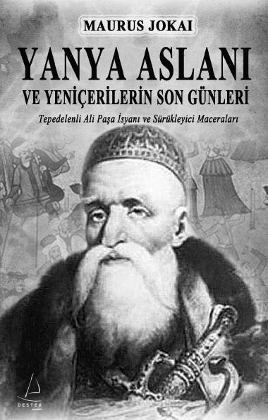

O gün Padişah’ın emriyle yirmi bin yeniçeri öldürüldü. Top ateşi ve kılıçtan kurtulan yeniçeri artıkları baltalarla parçalanarak ve boğularak öldürüldüler.
Bu olaydan sonra “Yeniçeri” kelimesi Osmanlı tarihinde bir daha görülmedi.